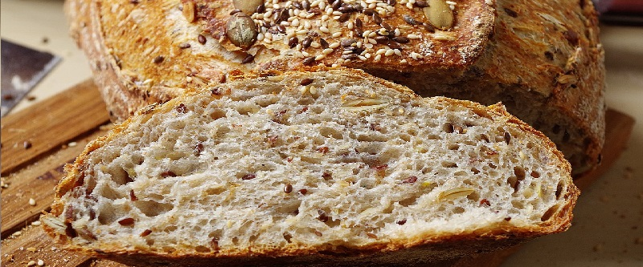

приготовление:
-
Поставить разогреваться духовку на 200 градусов.
-
В миске побольше смешать следующие ингридиенты: 100 гр обычной пшеничной муки, 350 гр цельнозерновой муки, 50 гр отрубей, 1 ч.л. соли, 10 гр разрыхлителя, 20 гр коричневого сахара. Все преремешать до однородности. Добавить 70 гр кокосового масла, растереть с сухими ингридиентами руками. Добавить 180 гр любых семечек/сухофруктов/орехов (можно пополам тыквенных и льняных семечек).
-
В миске поменьше: 250 мл кефира, 150 мл воды, 1 яйцо. Перемешать.
-
Добавить почти всю (оставить около 50 мл) жидкую смесь в сухую. Вымешать руками. Будет прилепать к рукам. На присыпанной мукой поверхности сформировать колобочек, выложить на бумагу для выпечки на противень, смазать остатками жидкой смеси, выпекать 45 минут. После выложить на решетку и дать остыть в течение часа.
-
ХРАНЕНИЕ: два дня при комнатной температуре, дольше - в пленке в холодильнике. Можно порезать крупно и убрать в морозилку, потом просто разогреть в духовке - и вуаля! вкусные завтраки для выходных на пару месяцев обеспечены!